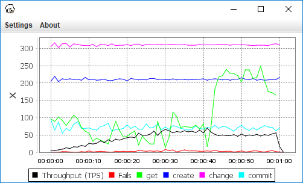
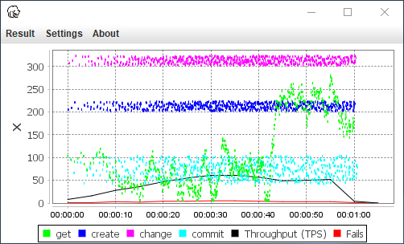

javadoc
You can find the javadocs here:
LoadScenario
The LoadScenario is the implementation of what the threads that executes the load will be doing. You can specify any logic inside this block that you need in order to achieve the load test that you want. This is where your Transactions are to be defined.
LoadScenario loadScenario = new LoadScenario() {
@Override
public void loadScenario() {
/* Define in this method what each thread will perform during one iteration */
}
};
Transactions
Transaction are defined inside the LoadScenario with the load method that takes two parameters.The first parameter is the name of the transaction.
The second parameter is the implementation of the transaction. It can be any codeblock that you want to define as a transaction.
LoadScenario loadScenario = new LoadScenario() {
@Override
public void loadScenario() {
load("nameOfTheTransaction" ()->{/*implementation of the transaction*/}).perform();
}
};byte[] bytes = load("returningTransaction", ()->{ return "aString".getBytes();}).perform();
load("voidTransaction", ()->{ new String(bytes);}).perform();-
The perform method performs the transaction and returns the value.
byte[] bytes = load("returnBytes", ()->{ return "aString".getBytes();}).perform(); -
The handleResult method gives you a possiblity to decide what to do with the result before it is reported as a done transaction. This is done by implementing a ResultHandler that takes one parameter containing all elements of the result, such as response time, returning value and possible thrown Exception. You can also change the values inside the result object which affects how the result are reported.
load("resultHandled", () -> {return "aString".getBytes();}) .handleResult((result) -> { if(result.getResponseTime() > 100) { result.setStatus(false); result.setMessage("Really long responsetime"); } if(result.getException() != null) { result.setStatus(false); } byte[] returnedBytes = result.getResponse(); if(returnedBytes.length == 10) { result.reportTransaction(false); } }).perform(); -
The performAndGetModel method returns the same result object that is provided inside the ResultHandler for the handleResult method. This can be used if you for example need the thrown exception later in the LoadScenario.
public void loadScenario() { ResultModel<?> result = load("willThrowException", ()->{ throw new RuntimeException("error");}) .performAndGetModel(); if(result.getException() != null) { return; } load("nextTransaction", ()->{ }).perform(); }
load("unmadeTransaction", ()->{ return "aString".getBytes();});
LoadBuilder
The LoadBuilder takes the LoadScenario as a parameter, and provides a set of methods where the load level and other features like pre and post execution can be set.
Load load = new LoadBuilder(loadScenario)
.amountOfThreads(10)
.rampup(30 * SECOND)
.stopDecision(duration(2 * MINUTE))
.throttle(10, PER_SECOND, PER_THREAD)
.preExecution(()->{})
.postExecution(()->{})
.build();;- amountOfThreads sets the amount of threads that shall execute the LoadScenario.
- rampup sets the rampup duration of the threads
- stopDecision takes a StopDecision based on the starttime and the amount of done iterations, in order to decide whether to stop the test or not.
- throttle takes a value and a timeunit to build a throttle for the instensity of the load, with the last parameter stating if the throttle shall be specific per thread or if it should be shared between the threads.
-
The pre and postExecution methods takes a Executable that can be used to setup and teardown the test for each thread. This can be useful if you for example want a unique client for each thread to use for the actual call to the system being tested. In order to achieve this, a mapping is needed between the thread and the setup object. This is easily done with Java's ThreadLocal
ThreadLocal<RestClient> threadLocal = ThreadLocal<RestClient>(); LoadScenario s = new LoadScenario() { public void loadScenario() { load("restCall", ()-> {threadLocal.get().callSystem();}).perform(); } } Load load = new LoadBuilder(s) .preExecution(()->{threadLocal.set(new RestClient());}) .postExecution(()->{threadLocal.get().closeClient();}) .build();
Execution
An Execution needs to be created in order to run the loadtest. This is done by using the ExecutionBuilder that takes the load as a parameter, as well as providing a set of methods to configure the execution.
Execution execution = new ExecutionBuilder(load)
.runtimeResultUser(new RuntimeChart())
.resultFormatter(SIMPLE_RESULT_FORMATTER)
.build();- runtimeResultUser takes a RuntimeResultUser which basically can be anything that can consume resultdata during the runtime of the loadtest. RuntimeChart is Loadcoder's own implementation that is used to monitor the result during runtime.
- resultFormatter takes a ResultFormatter that performs the formatting of made transactions into loggable Strings, as well as creating transactions from a previously written logfile. Use this if you want to create your own format for the logfile where the results are written.
StartedExecution startedExecution = execution.execute();
FinishedExecution finished = startedExecution.andWait();
RuntimeChart
The RuntimeChart is a graph that shows the average response times for each transaction type, as well as throughput and amount of fails over time

Result
Result can be generated, either from a finished test or a log file from an previously executed test. This Result is used to generate a Summary and a ResultChart with
Result resultFromExecutedLoad = finished.getReportedResultFromResultFile();
Result resultFromResultFile = new Result(new File("src/test/resources/testresults/2min.log"));
ResultChart
The ResultChart is similar to the RuntimeChart with additional functionality but can only be used for already finished test.

Summary
A summary can be generated using the Result object. Use the method in SummaryUtils to log the default summary
SummaryUtils.printSimpleSummary(result, "simleTest");
==========output==========
Summary for simleTest
Duration: 60530 milliseconds
Throughput: 42.0TPS
Transaction MAX AVG Fails 90%
getId 241 117 0 200
change 221 210 0 219
delete 321 310 0 319
commit 101 70 66 95Summary resultSummarizer = new Summary(result);
resultSummarizer
.log((summaryResult)-> {return "Summary for my load test";})
.log((summaryResult) -> {return "From resultfile:" + summaryResult.getResultFile();})
.table()
.column("Transaction", transactionNames())
.column("Amount", (transactionList)->{return "" + transactionList.size();})
.print();
==========output==========
Summary for my load test
From resultfile:target\myLoadTest\2018-08-14_212828\result.log
Transaction Amount
getId 114
change 114
delete 114
commit 114
Logging
Logging the result works with both Logback and Log4J, but Loadcoder provides the features to change logging directory for Logback, which is because of that the recommended logging library.In order to get the transactions logged, there needs to be a logger defined for the class com.loadcoder.result.Logs
-
Logback is included in the loadcoder-all dependency. But if you'r just using loadcoder-core you can of cource add Logback explicitly.
Below is an example of the logback.xml. A logger is explicitly created for the class com.loadcoder.result.Logs that uses Loadcoders own SharedDirFileAppenderLogback. This is an extention of the Logback fileappender, but with the ability to switch directory for all the created SharedDirFileAppenderLogback. This is useful if you execute several loadtest and want to keep the logfiles separate between the tests.<!-- https://mvnrepository.com/artifact/ch.qos.logback/logback-classic --> <dependency> <groupId>ch.qos.logback</groupId> <artifactId>logback-classic</artifactId> <version>1.2.3</version> </dependency>
Here is an example with 2 tests that each uses the setResultDestination method to set a directory for the files that are written with the SharedDirFileAppenderLogback appenders<?xml version="1.0" encoding="UTF-8"?> <configuration> <appender name="resultappender" class="com.loadcoder.logback.SharedDirFileAppenderLogback"> <file>result.log</file> <append>false</append> <encoder> <pattern>%m%n</pattern> </encoder> </appender> <appender name="infoappender" class="com.loadcoder.logback.SharedDirFileAppenderLogback"> <file>info.log</file> <append>false</append> <encoder> <pattern>%date{HH:mm:ss.SSS} %logger{32} %m%n</pattern> </encoder> </appender> <logger name="com.loadcoder.result.Logs" level="debug" additivity="false"> <appender-ref ref="resultappender" /> </logger> <root level="info"> <appender-ref ref="infoappender" /> </root> </configuration>Logger log = LoggerFactory.getLogger(this.getClass()); LoadScenario loadScenario = new LoadScenario() { public void loadScenario() { load("foo", ()->{}).perform(); } }; @Test public void test1() { LogbackLogging.setResultDestination(new File("target/logs/test1")); log.info("Executing test 1"); Load l = new LoadBuilder(loadScenario).build(); new ExecutionBuilder(l).build().execute().andWait(); } @Test public void test2() { LogbackLogging.setResultDestination(new File("target/logs/test2")); log.info("Executing test 2"); Load l = new LoadBuilder(loadScenario).build(); new ExecutionBuilder(l).build().execute().andWait(); } -
Loadcoder doens't include Log4J so you have to add it if you want to use it. Here is the dependency to slf4j-log4j dependency.
Below is an example of the log4j.xml. A logger is explicitly created for the class com.loadcoder.result.Logs that uses a FileAppender<!-- https://mvnrepository.com/artifact/org.slf4j/slf4j-log4j12 --> <dependency> <groupId>org.slf4j</groupId> <artifactId>slf4j-log4j12</artifactId> <version>1.7.25</version> </dependency><?xml version="1.0" encoding="UTF-8" ?> <!DOCTYPE log4j:configuration SYSTEM "log4j.dtd"> <log4j:configuration debug="true" xmlns:log4j='http://jakarta.apache.org/log4j/'> <appender name="console" class="org.apache.log4j.ConsoleAppender"> <layout class="org.apache.log4j.PatternLayout"> <param name="ConversionPattern" value="%d{yyyy-MM-dd HH:mm:ss} %-5p %c{1}:%L - %m%n" /> </layout> </appender> <appender name="resultappender" class="org.apache.log4j.FileAppender"> <param name="file" value="target/logs/result.log" /> <layout class="org.apache.log4j.PatternLayout"> <param name="ConversionPattern" value="%m%n" /> </layout> </appender> <logger name="com.loadcoder.result.Logs" additivity="false"> <level value="info"/> <appender-ref ref="resultappender"/> </logger> <root> <level value="info" /> <appender-ref ref="console" /> </root> </log4j:configuration>